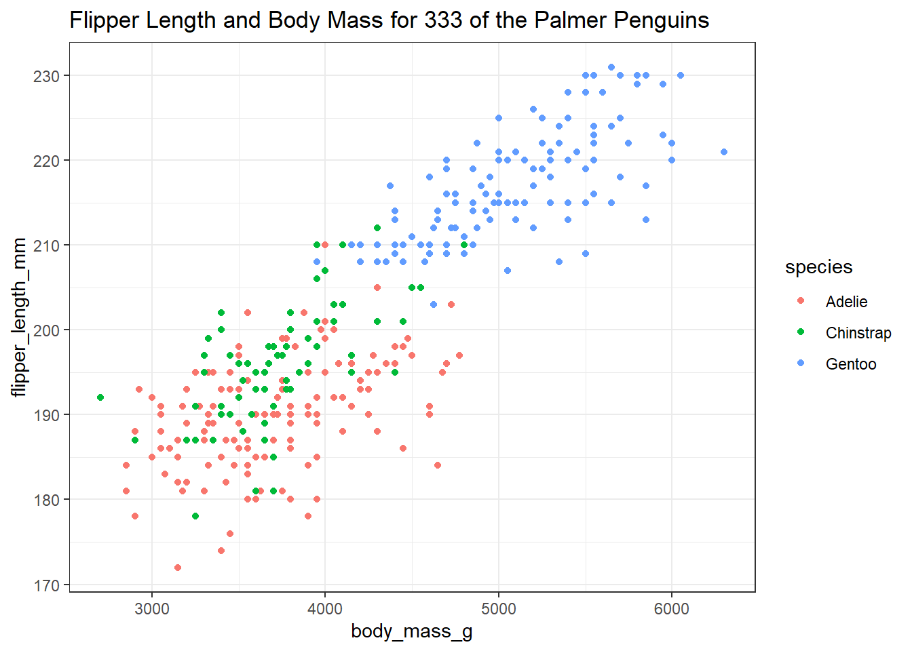

knitr::opts_chunk$set(comment = NA)
library(palmerpenguins)
library(janitor)
library(knitr)
library(kableExtra)
library(gt)
library(tidyverse)
theme_set(theme_bw())2 The Palmer Penguins
The data in the palmerpenguins package in R includes information on several measurements of interest for adult foraging penguins observed on islands in the Palmer Archipelago near Palmer Station, Antarctica. Dr. Kristen Gorman and the Palmer Station Long Term Ecological Research (LTER) Program collected the data and made it available1. The data describe three species of penguins, called Adelie, Chinstrap and Gentoo.
For more on the palmerpenguins package, visit https://allisonhorst.github.io/palmerpenguins/.
2.1 Setup: Packages Used Here
We will use the palmerpenguins package to supply us with data for this chapter. The janitor packages includes several useful functions, including tabyl. The knitr package includes the kable() function we’ll use. Finally, the tidyverse package will provide the bulk of the functions we’ll use in our work throughout the semester.
I always load the tidyverse last, because it solves some problems to do so.
2.2 Viewing a Data Set
The penguins data from the palmerpenguins package contains 344 rows and 8 columns. Each row contains data for a different penguin, and each column describes a variable contained in the data set.
penguins# A tibble: 344 × 8
species island bill_length_mm bill_depth_mm flipper_length_mm body_mass_g
<fct> <fct> <dbl> <dbl> <int> <int>
1 Adelie Torgersen 39.1 18.7 181 3750
2 Adelie Torgersen 39.5 17.4 186 3800
3 Adelie Torgersen 40.3 18 195 3250
4 Adelie Torgersen NA NA NA NA
5 Adelie Torgersen 36.7 19.3 193 3450
6 Adelie Torgersen 39.3 20.6 190 3650
7 Adelie Torgersen 38.9 17.8 181 3625
8 Adelie Torgersen 39.2 19.6 195 4675
9 Adelie Torgersen 34.1 18.1 193 3475
10 Adelie Torgersen 42 20.2 190 4250
# ℹ 334 more rows
# ℹ 2 more variables: sex <fct>, year <int>For instance, the first penguin in the data is of the species Adelie, and was observed on the island called Torgeson. The remaining data for that penguin include measures of its bill length and depth, its flipper length and body mass, its sex and the year in which it was observed.
Note that though there are 344 rows in the tibble of data called penguins, only the first ten rows (penguins) are shown in the table above. Note also that the symbol NA or <NA> is used to indicate a missing (not available) value.
2.3 Create new_penguins: Eliminating Missing Data
Next, let’s take the penguins data from the palmerpenguins package, and identify those observations which have complete data (so, no missing values) in four variables of interest. We’ll store that result in a new tibble (data set) called new_penguins and then take a look at that result using the following code.
Note that the code below:
- uses the “pipe”
|>to send the penguins tibble to thefilter()function - uses
<-to assign the result of our work to thenew_penguinstibble - uses the
complete.cases()function to remove cases withinpenguinsthat have missing data on any of the four variables (flipper_length_mm,body_mass_g,speciesorsex) that we identify
new_penguins <- penguins |>
filter(complete.cases(flipper_length_mm, body_mass_g, species, sex))
new_penguins# A tibble: 333 × 8
species island bill_length_mm bill_depth_mm flipper_length_mm body_mass_g
<fct> <fct> <dbl> <dbl> <int> <int>
1 Adelie Torgersen 39.1 18.7 181 3750
2 Adelie Torgersen 39.5 17.4 186 3800
3 Adelie Torgersen 40.3 18 195 3250
4 Adelie Torgersen 36.7 19.3 193 3450
5 Adelie Torgersen 39.3 20.6 190 3650
6 Adelie Torgersen 38.9 17.8 181 3625
7 Adelie Torgersen 39.2 19.6 195 4675
8 Adelie Torgersen 41.1 17.6 182 3200
9 Adelie Torgersen 38.6 21.2 191 3800
10 Adelie Torgersen 34.6 21.1 198 4400
# ℹ 323 more rows
# ℹ 2 more variables: sex <fct>, year <int>2.4 Counting Things and Making Tables
So, how many penguins are in our new_penguins data? When we printed out the result, we got an answer, but (as with many things in R) there are many ways to get the same result.
nrow(new_penguins)[1] 333How do our new_penguins data break down by sex and species? We’ll use the tabyl() function from the janitor package to look at this.
new_penguins |>
tabyl(sex, species) sex Adelie Chinstrap Gentoo
female 73 34 58
male 73 34 61The output is reasonably clear (there are 73 female and 73 male Adelie penguins in the newpenguins tibble, for example) but could we make that table a little prettier, and while we’re at it, can we add the row and column totals?
new_penguins |>
tabyl(sex, species) |>
adorn_totals(where = c("row", "col")) |> # add row, column totals
kable() # one convenient way to make the table prettier| sex | Adelie | Chinstrap | Gentoo | Total |
|---|---|---|---|---|
| female | 73 | 34 | 58 | 165 |
| male | 73 | 34 | 61 | 168 |
| Total | 146 | 68 | 119 | 333 |
The kable() function comes from the knitr package we loaded earlier. Notice that we added some comments to the code here with the prefix #. These comments are ignored by R in processing the data.
Another approach we could have used here is aided by the kableExtra package’s function called kbl(), which lets us set up the alignment of our columns. We’ll also add the species name using adorn_title() from the janitor package.
new_penguins |>
tabyl(sex, species) |>
adorn_totals(where = c("row", "col")) |>
adorn_title(placement = "combined") |>
kbl(align = c('lcccr')) |>
kable_styling(full_width = FALSE)| sex/species | Adelie | Chinstrap | Gentoo | Total |
|---|---|---|---|---|
| female | 73 | 34 | 58 | 165 |
| male | 73 | 34 | 61 | 168 |
| Total | 146 | 68 | 119 | 333 |
We can switch the rows and columns, and add some additional features, using the code below, which makes use of the gt() and tab_header() functions from the gt package, which is designed to help build complex tables. More on the incredibly versatile gt() package is available at https://gt.rstudio.com/.
new_penguins |>
tabyl(species, sex) |>
adorn_totals(where = c("row", "col")) |>
gt() |>
tab_header(
title = md("Palmer Penguins in **newpenguins**"),
subtitle = "Comparing sexes by species"
)| Palmer Penguins in newpenguins | |||
| Comparing sexes by species | |||
| species | female | male | Total |
|---|---|---|---|
| Adelie | 73 | 73 | 146 |
| Chinstrap | 34 | 34 | 68 |
| Gentoo | 58 | 61 | 119 |
| Total | 165 | 168 | 333 |
2.5 Creating a Scatterplot
Now, let’s look at the other two variables of interest. Let’s create a graph showing the association of body mass with flipper length across the complete set of 333 penguins.
ggplot(new_penguins, aes(x = body_mass_g, y = flipper_length_mm)) +
geom_point() 
Some of you may want to include a straight-line model (fit by a classical linear regression) to this plot. One way to do that in R involves the addition of a single line of code, like this:
ggplot(new_penguins, aes(x = body_mass_g, y = flipper_length_mm)) +
geom_point() +
geom_smooth(method = "lm", formula = y ~ x,
col = "red", se = FALSE)
Whenever we build a graph for ourselves, these default choices may be sufficient. But I’d like to see a prettier version if I was going to show it to someone else. So, I might use a different color for each species, and I might add a title, like this.
ggplot(new_penguins, aes(x = body_mass_g, y = flipper_length_mm, col = species)) +
geom_point() +
labs(title = "Flipper Length and Body Mass for 333 of the Palmer Penguins")
2.6 Six Ways To “Improve” This Graph
Now, let’s build a new graph to incorporate some additional information and improve the appearance. Here, I want to:
- plot the relationship between body mass and flipper length in light of both Sex and Species
- increase the size of the points and add a little transparency so we can see if points overlap,
- add some smooth curves to summarize the relationships between the two quantities (body mass and flipper length) within each combination of species and sex,
- split the graph into two “facets” (one for each sex),
- improve the axis labels,
- improve the titles by adding a subtitle, and also adding in some code to count the penguins (rather than hard-coding in the total number.)
ggplot(new_penguins, aes(x = body_mass_g, y = flipper_length_mm,
col = species)) +
geom_point(size = 2, alpha = 0.5) +
geom_smooth(method = "loess", formula = y ~ x,
se = FALSE, size = 1.5) +
facet_grid(~ sex) +
labs(title = "Flipper Length and Body Mass, by Sex & Species",
subtitle = str_glue(nrow(new_penguins), " of the Palmer Penguins"),
x = "Body Mass (g)",
y = "Flipper Length (mm)")Warning: Using `size` aesthetic for lines was deprecated in ggplot2 3.4.0.
ℹ Please use `linewidth` instead.
2.7 A Little Reflection
What can we learn from these plots and their construction? In particular,
- What do these plots suggest about the center of the distribution of each quantity (body mass and flipper length) overall, and within each combination of Sex and Species?
- What does the final plot suggest about the spread of the distribution of each of those quantities in each combination of Sex and Species?
- What do the plots suggest about the association of body mass and flipper length across the complete set of penguins?
- How does the shape and nature of this body mass - flipper length relationship change based on Sex and Species?
- Do you think it would be helpful to plot a straight-line relationship (rather than a smooth curve) within each combination of Sex and Species in the final plot? Why or why not? (Also, what would we have to do to the code to accomplish this?)
- How was the R code for the plot revised to accomplish each of the six “wants” specified above?
2.8 Coming Up
Next, we’ll introduce and demonstrate some more of the many available tools for creating summaries (both graphical and numerical) in R, again working with the Palmer Penguins data.
Two fun facts: (1) Male Gentoo and Adelie penguins “propose” to females by giving them a pebble. (2) The Adelie penguin was named for his wife by Jules Dumont d’Urville, who also rediscovered the Venus de Milo.↩︎